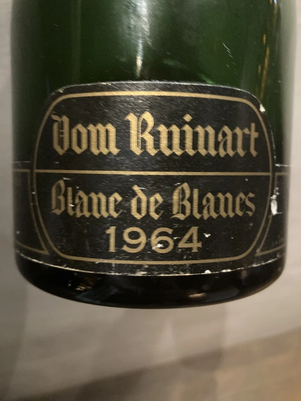

- Type
- White Sparkling, Brut
- Producer
- Dom Ruinart
- Vintage
- 1964
- Location
- France, Champagne AOC
- Grapes
- Chardonnay
- Alcohol
- 12.5
- Sugar
- NA
- Price
- 8000 UAH
- Cellar
- N/A
Ratings
2021-09-06 - 7.50
Tasted by accident. Anton Tlustyy shared it during Ulysse Collin dinner in 101 Bar.
It is interesting experience to taste 57 years old Champagne. Is it dead? Bubbles are gone for sure, it is over the peak, but still alive and has some good acidity left. Opulent oxidative nose reminding me of Madeira but with more cherry profile.
Related